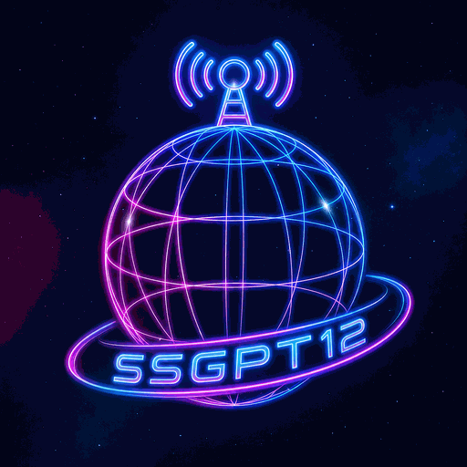

SSGPT14 RADIO · WEB
Онлайн радио
●
Текуща държава
—
♫
ГотовоИзбери радиостанция
LIVE
Местни станции
Каталог: 0 радиостанции
📻
Няма станции
SSGPT14 RADIO
Стил на визуализация
Избери готов цветови стил. Цветът на текста се настройва за добра четимост.
SSGPT14 RADIO
За приложението
Информация за продукта, версията и използваните услуги.
TEST ADS · без реални приходи
За каталога и възпроизвеждането на интернет радиостанции е необходима интернет връзка.
Radio Browser е външна услуга и не е част от SSGPT14 Radio. Условията на външните потоци и услуги се определят от съответните им доставчици.
Вграденият Player допуска само станции с проверено разрешение за вграждане и търговска употреба. При липса на доказателство приложението предлага само официалния сайт или маркира станцията за преглед.
© 2026 Spas Stankov. Всички права запазени.